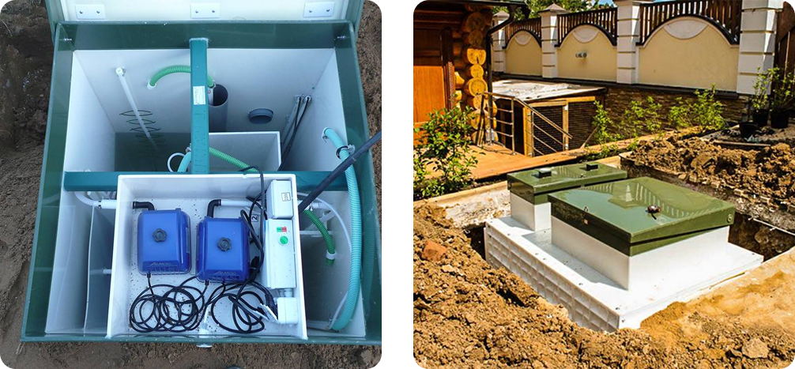
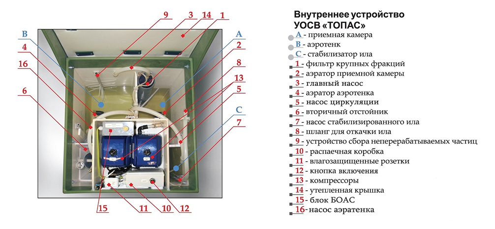

<section class="section blog-single-section mb-100">
	<div class="block-container">
		<article class="blog-single">
			<div class="blog-single__head">
				<div class="blog-single-meta">
					<div class="blog-single-meta__item">
						<span class="blog-single-meta__icon">
							
						</span>
						<span class="blog-single-meta__value">29.01.25</span>
					</div>
					<div class="blog-single-meta__item">
						<span class="blog-single-meta__icon">
							
						</span>
						<span class="blog-single-meta__value">2 минуты</span>
					</div>
				</div>
			</div>
			<div class="block-heading">
				<h1 class="block-heading__title">Уклон канализации: как правильно рассчитать и установить</h1>
			</div>
			<div class="blog-single__thumbnail">
				
			</div>
			<div class="blog-single__content single-content single-content--screen">
				<p>
					Правильный уклон канализационных труб играет важнейшую роль при проектировании как внутренних, так и наружных
					систем отвода сточных вод. Ошибки в расчётах могут привести к частым засорам, необходимости регулярного
					обслуживания и даже выходу из строя всей системы.
				</p>
				<p>
					Некоторые мастера ошибочно стремятся создать максимальный уклон канализации, в то время как другие игнорируют
					необходимость наклона. Оба подхода одинаково вредны и могут вызывать серьёзные проблемы.
				</p>
				<ul>
					<li>
						<strong>Чрезмерный угол уклона</strong>
						приводит к слишком быстрому движению жидких стоков, из-за чего твёрдые частицы не успевают смываться. Это
						вызывает заиливание труб, их засорение и сокращение срока службы системы.
					</li>
					<li>
						<strong>Недостаточный угол уклона</strong>
						может стать причиной застоя сточных вод и заиливания. В полимерных трубах особенно страдают соединения,
						тогда как в металлических трубопроводах повышается риск коррозии по всей длине, что значительно сокращает
						срок их эксплуатации.
					</li>
				</ul>
				<p>
					Чтобы избежать этих проблем, уклон канализационных труб должен быть рассчитан правильно. Угол наклона зависит
					от диаметра и длины трубопровода. Правильный расчёт наклона гарантирует стабильную и бесперебойную работу
					системы, снижает риск засоров и продлевает срок службы трубопровода.
				</p>
				
				<h3>Уклон канализационной трубы на 1 метр</h3>
				<p>
					Специалисты компании в запланированную дату приехали на участок со всей необходимой техникой для бурения
					скважины и материалами для её обустройства. Работы по бурению и обустройству скважины в Пушкинском округе
					выполнялись в определённом порядке:
				</p>
				<ul>
					<li>Бурение скважины глубиной 57 метров</li>
					<li>Земляные работы по рытью котлована для кессона</li>
					<li>Установка в котловане кессона, обвязка ПП трубами</li>
					<li>Монтаж скважинного погружного насоса в скважине, прокладка электрического кабеля для питания насоса.</li>
					<li>Установка в кессоне манометра и реле давления, гидробака, то есть автоматики системы водоснабжения.</li>
					<li>Обустройство точки слива в кессоне</li>
					<li>Монтаж вывода для электрокабеля, вывода на точки водоснабжения</li>
					<li>Монтаж крана типа гидрант, этот кран предполагает использование, вне зависимости от показателей
						температуры окружающей среды</li>
				</ul>
				
			</div>
		</article>
	</div>
</section>